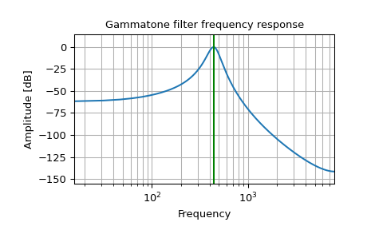

scipy.signal.gammatone¶
-
scipy.signal.gammatone(freq, ftype, order=None, numtaps=None, fs=None)[source]¶ Gammatone filter design.
This function computes the coefficients of an FIR or IIR gammatone digital filter [1].
- Parameters
- freqfloat
Center frequency of the filter (expressed in the same units as fs).
- ftype{‘fir’, ‘iir’}
The type of filter the function generates. If ‘fir’, the function will generate an Nth order FIR gammatone filter. If ‘iir’, the function will generate an 8th order digital IIR filter, modeled as as 4th order gammatone filter.
- orderint, optional
The order of the filter. Only used when
ftype='fir'. Default is 4 to model the human auditory system. Must be between 0 and 24.- numtapsint, optional
Length of the filter. Only used when
ftype='fir'. Default isfs*0.015if fs is greater than 1000, 15 if fs is less than or equal to 1000.- fsfloat, optional
The sampling frequency of the signal. freq must be between 0 and
fs/2. Default is 2.
- Returns
- b, andarray, ndarray
Numerator (
b) and denominator (a) polynomials of the filter.
- Raises
- ValueError
If freq is less than or equal to 0 or greater than or equal to
fs/2, if ftype is not ‘fir’ or ‘iir’, if order is less than or equal to 0 or greater than 24 whenftype='fir'
References
- 1
Slaney, Malcolm, “An Efficient Implementation of the Patterson-Holdsworth Auditory Filter Bank”, Apple Computer Technical Report 35, 1993, pp.3-8, 34-39.
Examples
16-sample 4th order FIR Gammatone filter centered at 440 Hz
>>> from scipy import signal >>> signal.gammatone(440, 'fir', numtaps=16, fs=16000) (array([ 0.00000000e+00, 2.22196719e-07, 1.64942101e-06, 4.99298227e-06, 1.01993969e-05, 1.63125770e-05, 2.14648940e-05, 2.29947263e-05, 1.76776931e-05, 2.04980537e-06, -2.72062858e-05, -7.28455299e-05, -1.36651076e-04, -2.19066855e-04, -3.18905076e-04, -4.33156712e-04]), [1.0])
IIR Gammatone filter centered at 440 Hz
>>> from scipy import signal >>> import matplotlib.pyplot as plt
>>> b, a = signal.gammatone(440, 'iir', fs=16000) >>> w, h = signal.freqz(b, a) >>> plt.plot(w / ((2 * np.pi) / 16000), 20 * np.log10(abs(h))) >>> plt.xscale('log') >>> plt.title('Gammatone filter frequency response') >>> plt.xlabel('Frequency') >>> plt.ylabel('Amplitude [dB]') >>> plt.margins(0, 0.1) >>> plt.grid(which='both', axis='both') >>> plt.axvline(440, color='green') # cutoff frequency >>> plt.show()
